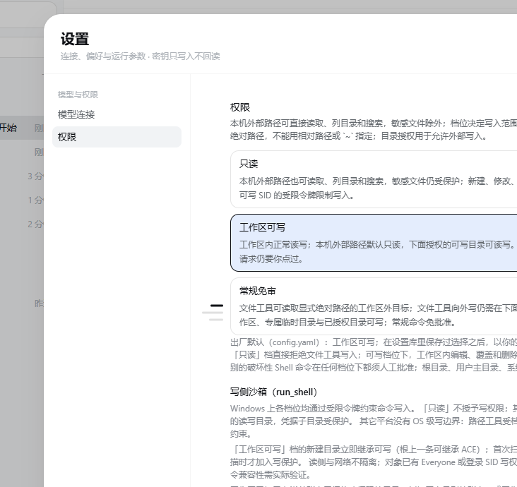

MANUAL · 第 3 章
权限三档与目录授权
档位回答的是「能写到哪」，不是「能不能读」。读外部文件不需要授权，写才需要。
三档分别是什么
| 档位 | 能写到哪里 | Shell |
|---|---|---|
| 只读 | 哪里都不写，连工作区也拒绝新建、修改与删除。 | 命令可以跑，但 Windows 下使用无可写 SID 的受限令牌，写操作会被拒绝。 |
| 工作区可写 （出厂默认） |
工作区内正常读写；外部路径默认只读，下面授权的可写目录可读写。 | 常规命令免批准；破坏性命令与越界请求仍要你点过。 |
| 常规免审 | 文件工具可读取外部绝对路径；向外写仍需逐目录授权。Shell 写范围仍限制在工作区、专属临时目录与已授权目录。 | 常规命令免批准。 |

页面会写明「出厂默认（config.yaml）：工作区可写；在设置库里保存过选择之后，以你的选择为准」。 改动从下一轮请求开始生效，正在执行或等待审批的任务保留提交时的档位。
读外部文件不需要授权
- 本机外部路径可以直接读取、列目录和搜索，不需要先加授权；敏感文件仍受限。
- 必须写绝对路径：相对路径、
~与盘符相对路径一律拒绝。 - 目录授权只用于「允许写入」，不控制读取；撤销写入授权后仍然可以读。
允许往工作区外写
- 在「外部可写目录」输入框里填一个绝对路径，例如
C:\data\shared。 - 点「添加可写目录」。授权覆盖该目录及其子目录，保存后持续生效。
- 要收回时，在列表里点「撤销写入」。
这些目标授权也不放行
根目录、用户主目录、系统目录与 Git 元数据不能被授权写入；受保护目标与敏感文件也不会因为 批准某次调用而放开。破坏性 Shell 命令名单由代码层保证只能追加、不能取消。
Windows 与非 Windows 的差别
- Windows：各档位都约束命令写入。可写档位的写范围是「工作区 + 专属临时目录 + 显式读写授权目录」，并保护物化时已存在的凭据子树。
- Linux / macOS：照常运行，但没有 OS 级写边界；界面与工具结果会如实说明这一点，不要把它当成等价的沙箱。
注意：已识别的破坏性命令在任何档位下都要人工批准，但命令模式无法完整识别任意脚本内部的删除或覆盖。
「工作区可写」意味着脚本可以在沙箱允许范围内修改文件——这是授权，不是承诺。
最后更新 2026-10-19 · 适用版本 v1.0